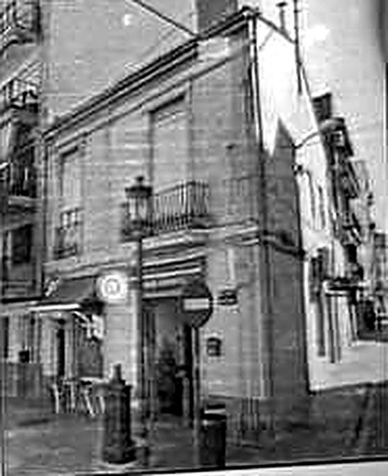
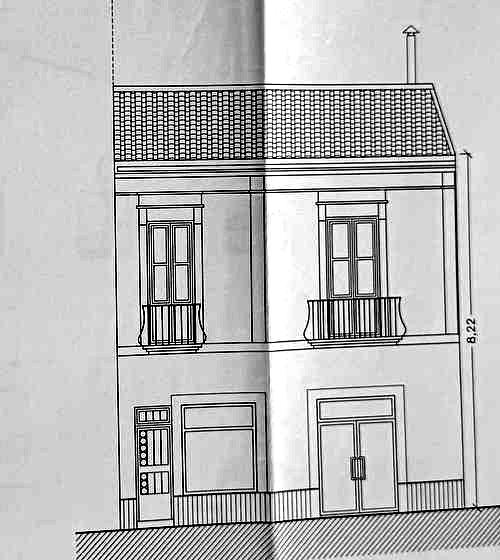
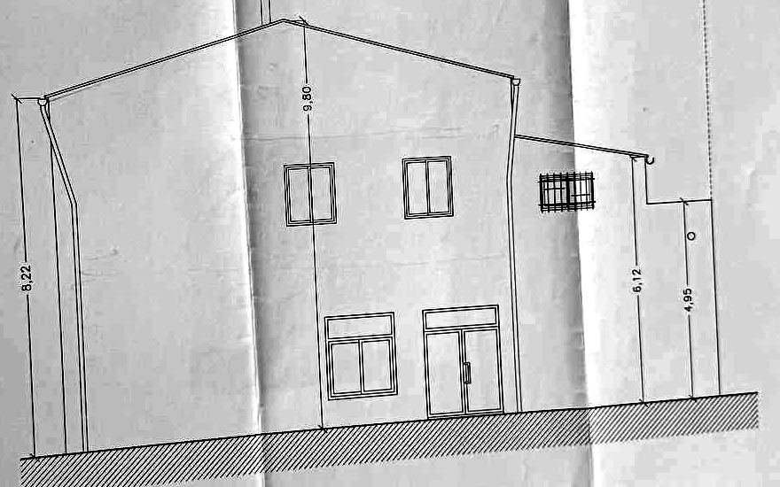

The building today
Photo and elevations from the 2020 façade restoration project. These are the façades the proposal keeps.



What is there now
- Floors
- Planta baja + 1, tiled gable roof
- Heights
- Eaves 8.22 m · ridge 9.80 m
- Storeys
- PB 3.69 m · P1 4.08 m
- Façades
- 8.21 m Burjassot · 16.17 m Carrasqueta
- Use
- Café on the ground floor, house above
- Protection
- Not listed (no protected elements in the urban report)
How the façades are kept
- Brace both street façades from outside with a temporary steel frame.
- Remove the roof, floors and inside walls. The party wall with no. 227 stays.
- Build a new steel frame inside, on its own micropile foundations, and tie the old walls to it.
- Add the new floors and the ático on the new frame. With 3 m floors the old cornice would cut across Planta 2, so it is taken down and re-made at the new roof line.
Exterior
Switch between the house today and the proposal. Up to 7 m it is the real façade; the new floors repeat its window rhythm and iron balconies, and the classic cornice is re-made at the top. Streets, crossings, lamp post and fountain follow your street-plan drawings.
Drag to rotate · scroll or pinch to zoom
The 3D view could not load here. The floor plans below still work.
Façades
Straight-on views of the proposal's two street fronts, at the same scale. Neighbours shown for context.
Floor plans
Pick a level. Areas are measured to wall centre lines. The orange line marks walls that are kept.
Steel structure
Pre-dimensioning of a new steel frame for both versions, with the same grid. It follows the version switch at the top of the page.
The no-lift calculation is being prepared; the numbers shown are with lift.
Member schedule
Assumptions and loads
With or without lift
How it must be built
Open points for the engineer
Before this goes further
- Plot size matches the 2020 drawings
The drawings give 8.21 m on Burjassot and 16.17 m on Carrasqueta, the same as the cadastral trace. A survey still gives the exact shape.
- Minimum plot is 100 m²
Your plot is 85.35 m². As your own analysis says, confirm with Planeamiento that it can be built on its own (Art. 6.18).
- An engineer must check the old walls
Keeping a façade needs a structural survey of the walls and foundations, and temporary bracing during the works.
- Ground floor is 3.69 m high
The rules ask for 3.70 to 4.80 m. An existing façade is usually accepted as it is, but confirm it with the city.
- Parking: 1 space per home
There is no room for cars on this footprint. Ask the city about an exemption or another solution early.
- Check height and balconies
The new cornice is about 13.0 m with PB + 3 and 10.0 m with PB + 2. Confirm the maximum cornice height in ENS-1, and how far balconies may stick out (Art. 6.19.10).